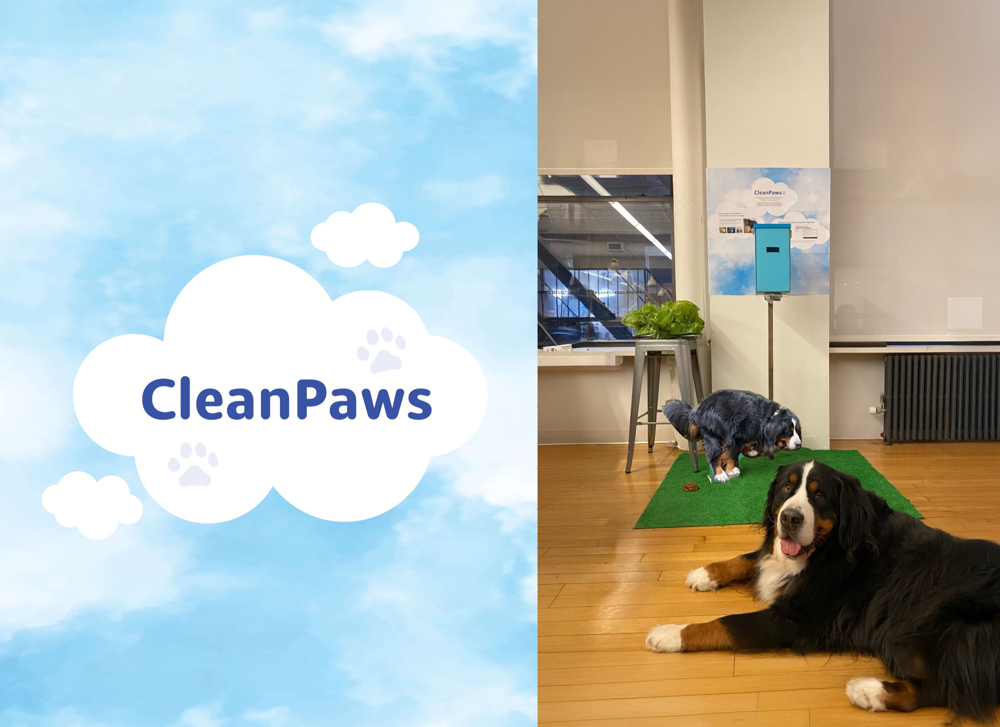
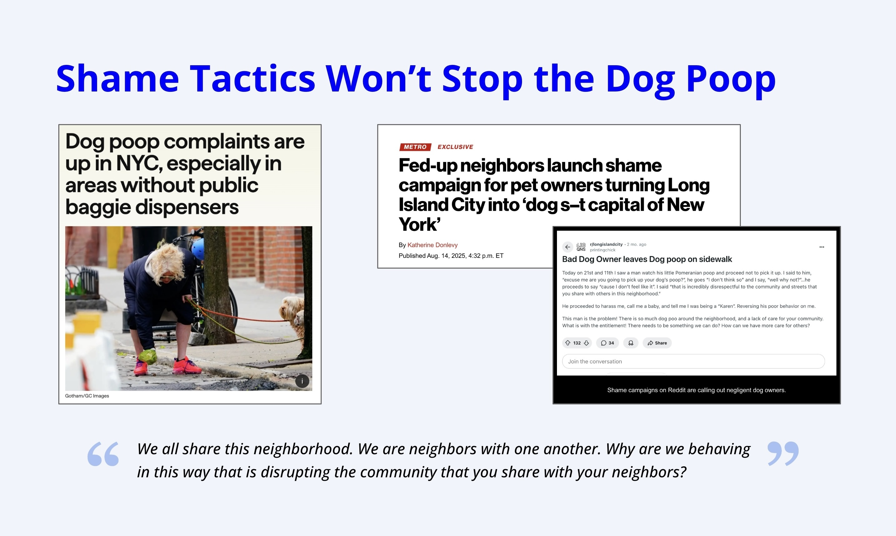
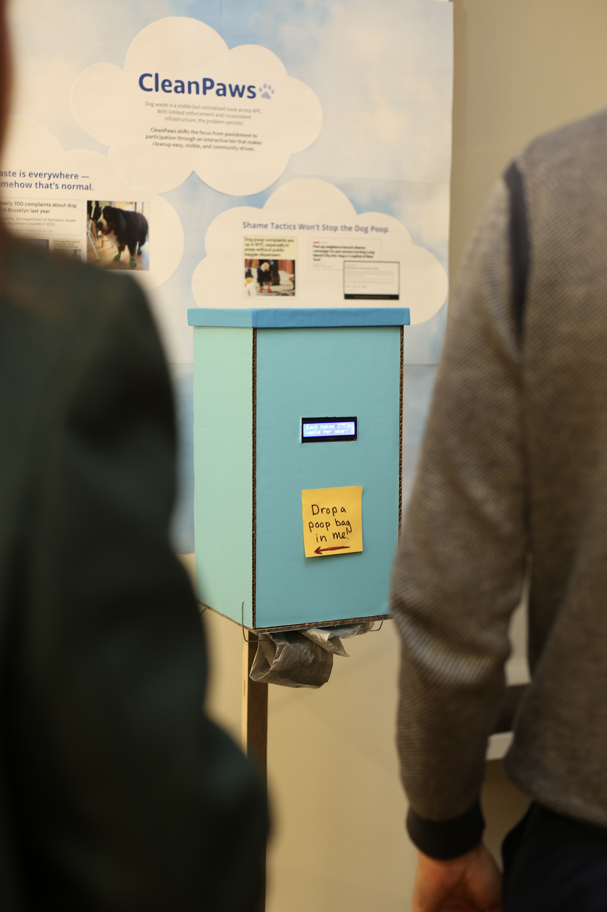
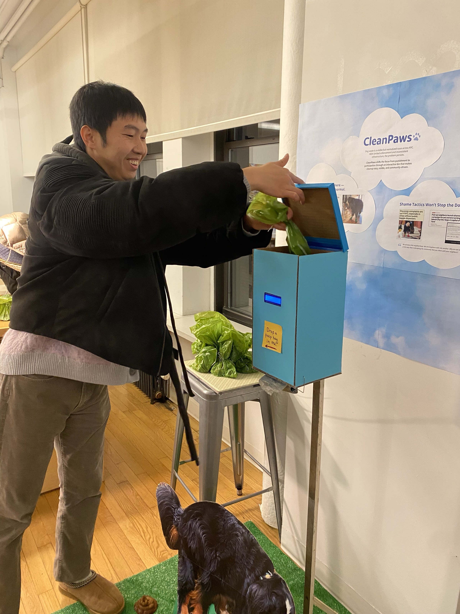

Turning dog-waste cleanup into a community win
Dog waste on NYC sidewalks isn't a mystery. Everyone sees it, everyone knows it's a problem, and as of February 2026, NYC has received close to 1,000 complaints about it. But complaints don't translate to change. Neighborhoods with the highest rates often have the fewest free bags or accessible bins, and enforcement requires an officer to witness the act — making the Pooper-Scooper Law nearly impossible to enforce at scale.
The gap isn't knowledge. It's infrastructure and incentive.
So the city does what cities do: runs awareness campaigns. And almost every one leads with shame.
The NYC Department of Sanitation has run shame campaigns. Neighborhoods have posted signs calling out repeat offenders. These efforts get attention. They don't change behavior.
What the research kept pointing to was simpler: shame creates resistance, recognition creates momentum. Research on waste reduction campaigns found that visible collective progress motivates even the least-engaged participants to contribute at levels comparable to those already committed (Frontiers in Psychology, 2019). When cleanup feels like contributing to something shared, people show up.
The data made the case. But what stuck with me was the story underneath it — that people actually want to do the right thing. They just need a reason that feels good, not a reason to feel watched.
"I asked myself: what would it look like to create a solution that supports the behavior we want — instead of relying on catching people doing the wrong thing?"

CleanPaws is an interactive dog-waste station designed for sidewalks and parks. Built with an Arduino and a load cell, it detects when a bag is dropped in and responds immediately. The station combines a waste bin, a built-in bag dispenser, and a small screen.
The interaction is intentionally small. Drop a bag, get a response. The screen lights up with a friendly message and plays a chime — just enough to acknowledge the action without feeling over the top. Messages rotate to keep it fresh.
A fullness meter under "Every Bag Counts" updates in real time, so people can see that their action moved the needle. And when the bin reaches capacity, the station briefly celebrates: 20 kilograms collected, 96 million gallons of water protected, enough to supply 877 NYC households. The final screen reads: "Community makes it happen."
That last part matters. The numbers give people a reason to believe their action counts. The framing gives them a reason to care.


People genuinely enjoyed the interaction. The chime and message made cleanup feel good rather than obligatory, and the impact data helped people connect a small action to something much larger. A bigger screen or subtle lighting could make the moment land even harder — something to explore in the next iteration.
CleanPaws reframes a compliance problem as a participation opportunity. The infrastructure removes the barrier, the feedback makes the action feel worthwhile, and the collective data gives a sidewalk habit a larger meaning. It's a small interaction — but one that could scale into something the neighborhood actually feels.
Numbers alone don't move people — but numbers with context do. "96 million gallons of water protected" lands differently than a statistic on a poster because it gives people a way to picture the impact of something they just did.
Positive feedback loops outlast punishment and awareness campaigns. Making an action feel good is more sustainable than making people feel guilty — and a lot more fun to design.
A free bag dispenser isn't a design detail. It's the thing that removes the most common excuse. Sometimes the most impactful design decision is just making the right thing easy.